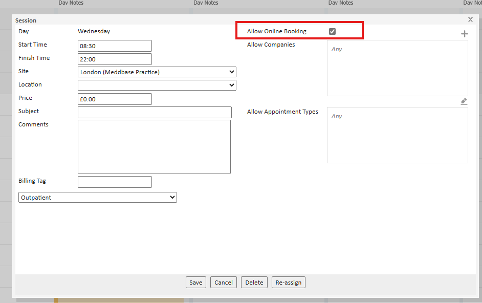
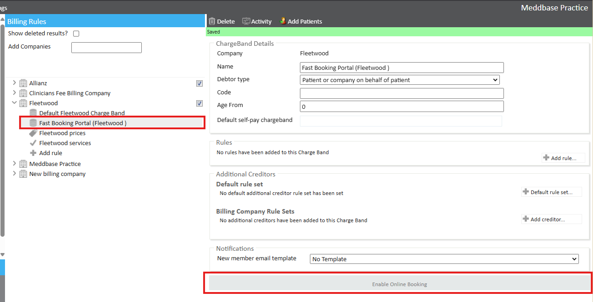
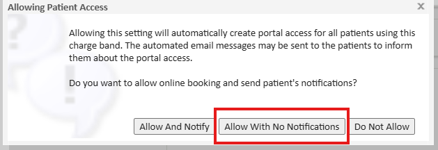
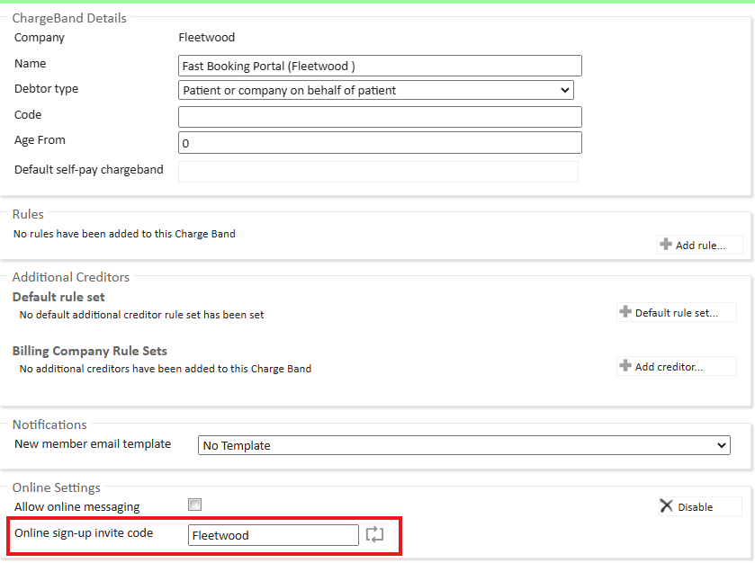
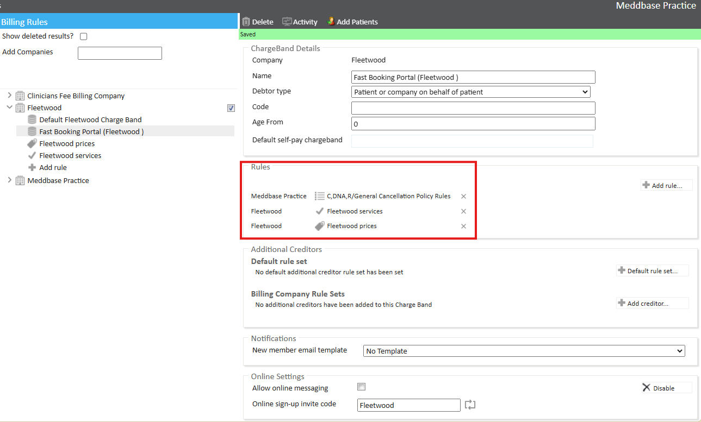
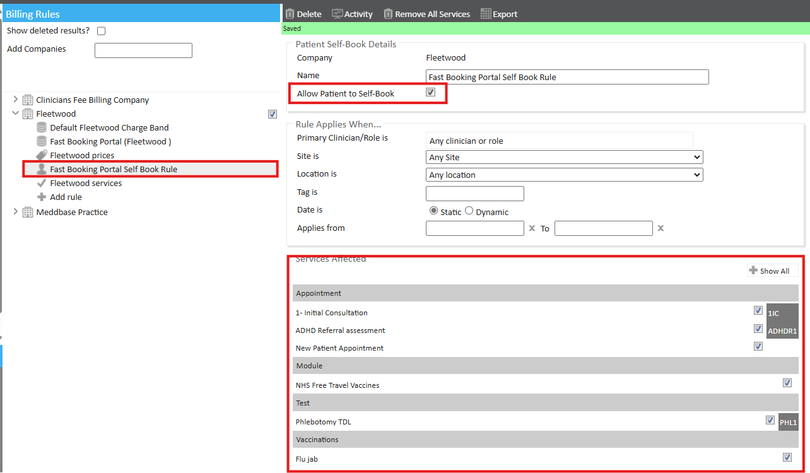
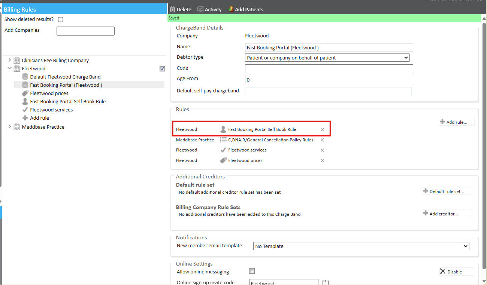
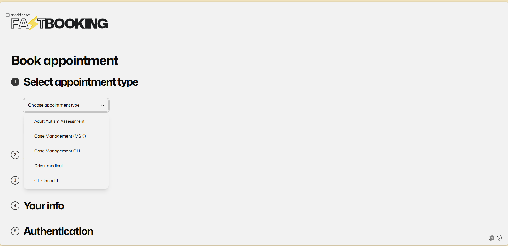

The Meddbase Fast Booking Portal features a single-page interface that allows for quicker and more efficient booking of appointments or services. Patients can easily see a wide range of availability at a glance through a branded and customised interface. Additionally, the portal is fully compliant with WCAG 2.2 AA standards, ensuring accessibility for all users.
The Fast Booking Portal is linked to your Meddbase Chargebands, you control which services patients can book without requiring a patient portal account. This control means that services needing longer pre-appointment or triage workflows are gated, while high-volume, quick services can be booked swiftly by any patient, reducing drop-off.
The purpose of this article is to give a guide on how to configure and utilise the new FPB with your patient portal.
The setup of the Fast Booking Portal follows the same setup and chamber prerequisites for the patient portal. To learn more about the Patient Portal, please see Patient Portal Setup.
The Fast Booking Portal (FBP) is highly configurable in terms of theme, logos, additional text and other features. You will need to raise a request with your account manager/support, stating that you would like an FBP. Once your request is received, the Solutions Engineer team will provide you with a list of specifications and requirements that you need to supply. Based on this information, they will create your customised FBP.
If you require client-specific branding, this can be customised per Charge Band. The Solutions Engineer team will also provide details on what customisation options are available, including dimensions and theme specifications.
You will be provided with your Fast Booking Portal link which you will then use to test your configuration after following the below instructions.
Clinician Site sessions must have Allow Online Booking enabled so that patients can book onto a slot. This is the same set-up required for the Patient Portal and Fast Booking Portal.

Once our Solution Engineers have created the Fast Booking Portal, with your agreed theme, you will need to configure the Charge Band and settings that determine what appointments and services patients can book through the portal.
Each FBP link is linked to a Charge Band, which can either be a dedicated FBP Charge Band or an existing online-enabled Charge Band already in use.
If you are looking to use the FBP on an existing Charge Band that is online enabled, has a signup-invite code already set, and already provides services, jump to Step 4.


To learn more about creating an online Charge Band, see Creating an Online Charge Band.
Each online-enabled charge band will require a unique signup invite code. The invite code dictates the services a patient can book using that link and who the payer is.

Set up billing rules according to your organisation’s finance and billing structure.

The patient self-book rule is important as it dictates what appointments and services a patient can book via the FBP.

Ensure the rule is added to the Charge Band to enable self-booking. Without this rule, the patient will not be able to book any appointments. 
Verify that patients can successfully sign up and book appointments using the Fast Booking Portal link.
Depending on the environment the chamber is on, the following URLs will differ.

How does the system prevent duplicate patient records?
When a patient signs up through the FBP (Front Booking Portal), the system checks for existing records to prevent the creation of duplicates. Here's how it works:
The matching criteria used to identify existing patients are:
If all of these criteria match an existing patient, the system will link the new sign-up to the existing patient profile, avoiding the creation of a duplicate record.
Can I customise the theme/colour of the FBP?
Can I have multiple Fast Booking Portals?
How do I configure the services that patients can book?
What should I do if a patient is having trouble accessing the FBP?
How do I set up different services for different payer types?
How are payments handled through the FBP?
Can patients complete a booking without authentication?
Our chamber is on the US environment, why isn't https://fast.patientbooking.co.uk/ working?